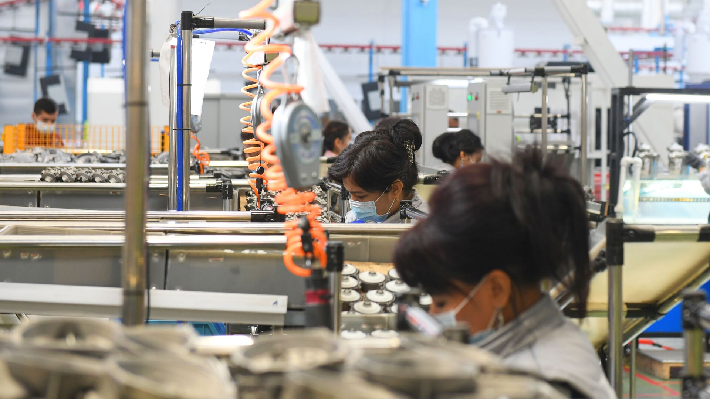

"Sanoat zonalarida kasbga qayta tayyorlash markazlari va biznes-inkubatorlar ochildi."
Ishsizlik va malakali kadrlar yetishmovchiligi muammosi ta’lim va ishlab chiqarish integratsiyasi orqali yechilmoqda.
O‘zbekistonda 2026-yilga kelib sanoat zonalarida kasbga qayta tayyorlash markazlari va biznes-inkubatorlarning tashkil etilishi iqtisodiy islohotlarning eng muhim bo‘g‘iniga aylandi. Bu tizim shunchaki bino qurish emas, balki "ta’lim – fan – ishlab chiqarish" zanjirini amalda bog‘lashning yangi modelidir. Mamlakatimizda ishsizlikni 4,5 foizgacha tushirish va kambag‘allikni keskin qisqartirish yo‘lida ushbu integratsiya asosiy drayver bo‘lib xizmat qilmoqda. Sanoat zonalari huzurida ochilgan qayta tayyorlash markazlari birinchi navbatda hududiy ehtiyojdan kelib chiqib, aynan o‘sha zonadagi zavod va fabrikalarga kerakli bo‘lgan tor doiradagi mutaxassislarni tayyorlab bermoqda. Bu esa bitiruvchining ish qidirib yurishiga hojat qoldirmaydi, chunki u o‘qish davomidayoq bevosita ishlab chiqarish texnologiyalari bilan tanishadi va dual ta’lim tizimi asosida amaliyot o‘taydi.

Shu bilan birga, biznes-inkubatorlar faoliyati yoshlar va ishsiz fuqarolarning nafaqat ishchi, balki tadbirkor bo‘lib yetishishiga xizmat qilmoqda. 2026-yil O‘zbekistonda "Yoshlarni zamonaviy kasblarga o‘qitish va malakasini oshirish yili" deb e’lon qilinishi munosabati bilan, bu inkubatorlar innovatsion g‘oyalarni ishlab chiqarishga tatbiq etish uchun ko‘prik vazifasini o‘tamoqda. Sanoat zonalaridagi tadbirkorlar o‘zlariga kerakli butlovchi qismlarni mahalliylashtirish uchun kichik startaplarni qo‘llab-quvvatlayapti, bu esa sanoat kooperatsiyasini yangi bosqichga olib chiqdi. Endilikda ishsiz aholiga berilayotgan "kasb vaucherlari" orqali ular o‘zlari xohlagan yo‘nalishda qisqa muddatli kurslarda bepul o‘qish imkoniyatiga ega bo‘lishmoqda. Bu tizim Germaniya, Janubiy Koreya va Xitoy kabi davlatlarning tajribasiga tayanib, 60 dan ortiq modulli o‘quv dasturlari asosida yo‘lga qo‘yilgan.
Sanoat va ta’lim integratsiyasining yana bir muhim jihati shundaki, endi texnikumlar va monomarkazlar bevosita yirik sanoat korxonalari boshqaruviga berilmoqda. Masalan, to‘qimachilik, metallurgiya yoki avtomobilsozlik klasterlari o‘z kadrlar bazasini o‘zlari shakllantiryapti. Bu yondashuv kadrlar yetishmovchiligi muammosini hal qilish bilan birga, ishlab chiqarish samaradorligini 1,4 baravarga oshirish imkonini bermoqda. 2026-yilga kelib respublika bo‘ylab 200 ga yaqin yangi sanoat zonalari va o‘nlab "Biznes-hamroh" markazlarining ishga tushirilishi har yili 300 mingga yaqin yuqori daromadli ish o‘rinlari yaratilishini kafolatlamoqda. Xulosa qilib aytganda, O‘zbekistondagi ushbu yangi tizim ishsiz fuqaroni shunchaki ro‘yxatga olish emas, balki uni zamonaviy ko‘nikmalar bilan qurollantirib, real iqtisodiyotning faol ishtirokchisiga aylantirishga qaratilgan.